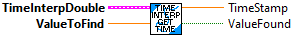
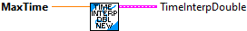

Add a sample to the buffer.
Inputs:
- In TimeInterpDouble -- Time Interp data cluster
- Time -- The time stamp of the sample (seconds)
- Value -- The double value
Outputs:
- out TimeInterpDouble -- Updated Time Interp data cluster

Removes samples older than our current history size.
Inputs:
- In TimeInterpDouble -- Input data cluster.
Outputs:
- Out TimeInterpDouble -- Updated data cluster.
- Error -- Returns TRUE if an error occured.

Removes all samples from the history buffer.
Inputs:
- In TimeInterpDouble -- Input data cluster.
Outputs:
- Out TimeInterpDouble -- Updated data cluster.

Sample the buffer at the given time.
Inputs:
- TimeInterpDouble -- Input data cluster
- TimeStamp -- Time at which to sample (seconds)
Outputs
- OutputDouble -- Sampled Double. This is an exact value if there is a sample in the buffer at this time. Otherwise the value is interpolated.
- IsPresent -- Returns TRUE if the buffer contains data as far back as TimeStamp.

Find the time for a particular value in the buffer. The first instance of a value is found. If an exact match isn't fond, interpolation is used to calculate the time for the value. If there multiple instances of a value exist, only the first one is returned.
Inputs:
- TimeInterpDouble -- Input data cluster
- Value -- The value to search for.
Outputs
- TimeState -- Time stamp for the input value.
- IsPresent -- Returns TRUE if the buffer contains data as far back as TimeStamp.

Create the data cluster for a TIME_INTERPOLATABLE_DOUBLE.
The TimeInterpolatableBuffer provides an easy way to estimate past measurements. One application might be in conjunction with the DifferentialDrivePoseEstimator, where knowledge of the robot pose at the time when vision or other global measurement were recorded is necessary, or for recording the past angles of mechanisms as measured by encoders.
The TIME_INTERPOLATABLE_DOUBLE stores and returns DOUBLE values.
Inputs:
- Max Time -- The maximum time (seconds) of data to store in the buffer.
Outputs:
- Time Inter Double -- Created data structure cluster

Set the maximum time period that should be stored in the buffer
Inputs:
- In TimeInterpDouble -- Input data cluster.
- Max Time -- Maximum time period to store in the buffer (seconds)
Outputs:
- Out TimeInterpDouble -- Updated data cluster.